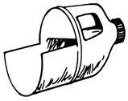

Ask Poppy George
Here Poppy George share his experience and on the care of homestead livestock. He gives his idea on how to feed a sows and the problems regarding their behavior. George also mentioned here some suggestions and answers to many question regarding about problems in raising a livestock.
May/June 1974
Issue No. 27 - May/June 1974
"Poppy George" is now sharing his experience by giving MOTHER's readers down-to-earth advice on the care and feeding of homestead livestock. Questions should be mailed to Mr. George Plitt, Happiness Hills Farms, RD 3, Addison, N. Y. 14801.
QUESTION: I find equipment for our animals is very expensive to purchase. Do you have any suggestions?
ANSWER: Here are a few ideas to get you started:
[1] Feed scoop: Take a gallon plastic container (Clorox, windshield washer fluid, antifreeze, etc.), wash it thoroughly and wash it again. Next, cut the bottle as illustrated with a sharp knife (watch your fingers). I think you'll find this a practical item, and the price is right.
[2] Feed or water bucket: Most local bakeries will resell the plastic pails (about five gallons in capacity) in which jelly and pie fillings are supplied. These cost 50 cents to 75 cents and are excellent, strong and lasting. Another source is Dunkin' Donuts shops, which have a fancy cherry-colored unit available for around 75 cents with cover. Fill the containers only halfway if five gallons is too heavy to tug.
[3] Tie-out chain for goats, watchdogs, cows, etc.: You can pick up broken tire chains from a junkyard for a pittance, remove the cross-links and string two or three of the sides together. The result will by far outlast any store-bought variety.
QUESTION: Two of my sows have eaten some of their newborn pigs. What causes this behavior, and what-if anything-can be done about it?
ANSWER: If the sows have been properly fed, excitement and/or nervousness is usually the reason: A female that has a large litter may be flustered by the squealing of the many newborn piglets and will sometimes devour them
Several things can be done to help prevent such a loss:
[1] Remove the young from the sow as soon as they're born and put them in a large box or in another section of your building. Protect the litter from drafts. If possible, place a 150-watt bulb-with an inverted aluminum piepan as a reflector-over the bed to deflect heat downward on the piglets during their temporary absence from the mother.
[2] After the sow has finished farrowing and has had time to relax a bit from her nervous state, return the litter to her.
[3] Be sure the pen is clean and properly sanitized (use Lysol or an equivalent) and has adequate ventilation.
[4] Music has a soothing effect on all livestock. A radio on in the sow's quarters will help to calm her.
QUESTION: How can I mark or identify some of my laying chickens to know how many years I've had them?
ANSWER: The method you choose depends on your degree of interest. Chickens can be fitted with numbered aluminum leg bands and a written record kept of each bird. Or you can get colored spiral celluloid leg bands and put, for example, a red marker on one-year-old birds, add a yellow band the second year and a green band the third.
Various types of bands can be obtained from the National Band and Tag Company, 721 York Street, Newport, Kentucky 41072 (a long-established manufacturer of these items).
QUESTION: How can I supply my livestock with minerals inexpensively?
ANSWER: Purchase a 50-pound trace-mineralized salt block (about $2.00). If your cows, horses, goats or sheep are on pasture, simply drive a short length of pipe into the ground and set the indentation in the block over this stake to keep. the salt clear of the earth. (No protection from weather is needed.) The animals will then lick the supplement as they want it. If your livestock are kept in separate stalls, break up the large block into smaller pieces with a hammer and put one chunk in each individual feeding area.
Di-calcium phosphate or steamed bone meal left in a container-sheltered from rain-where the animals have access to it, is an excellent source of phosphorus. Ground limestone or calcium carbonate fed free choice in the same way will round out your livestock's mineral intake. This substance is very reasonable in cost. Do not attempt to feed hydrated lime! I might also suggest wood ashes- free of nails and metal objects -as a natural, inexpensive supplement.
I strongly recommend making these materials available to the stock on a free-choice basis. Let them be their own nutritionists, and they'll eat what's necessary to fill their need for minerals.
QUESTION: When I clean my horse's stall and put in fresh sawdust and shavings, the horse lies down and rolls in the bedding. Twice I've found him on his back in a corner, thrashing around and unable to get up, In trying to help him I got banged a few times (luckily not too badly). How can I assist the animal without getting myself hurt?
ANSWER: It's a natural and healthy action (or reaction) for a horse to roll in nice clean shavings or sawdust. He may not, however, realize the limitations of his stall and can get himself "cast". If the animal isn't found and helped, this can result in serious injury and sometimes death.
To help a horse out of this difficulty without danger to yourself, do not go near his feet, either front or rear. Simply get a good grip on his tail with both hands and drag his rear end sideways, away from the wall or obstruction. Again I caution you, stay clear of his hoofs!
It's almost unbelievable, but a 105- or 110-pound gal can pull a 1,000-pound horse fairly easily. You'll find the patient will jump up when clear of the wall, and usually the only thing hurt will be his ego.
QUESTION: I want to plant a small pasture for my cow and goats, but with the high price of seeds my budget can't stretch that far. Poppy George, can you suggest a solution for this problem . . . one that others like myself may also be facing?
ANSWER: Here are two suggestions:
[1] Since all seeds in almost all states must be tested for germination every year before being offered for sale, I suggest you contact the larger seed producers (not the feed or seed dealers but the firms which supply them: Northrup King & Company, 1500 Jackson N.E., Minneapolis, Minnesota 55413; O.M. Scott Seed Company, 100 Park, Marysville, Ohio 43040; Asgrow Mandeville Company, Cambridge, New York 12816, etc.) and tell them you're interested in purchasing "low germination" timothy, clover, alfalfa or whatever you desire. If they have any on hand (and most times they do) you can buy it for a mere fraction of the normal price. Just sow double the usual amount and you'll get a good stand. Due, to transportation costs, however, 300-pound lots would be the least you could buy and still avoid paying excessively for trucking. (The minimum rate applies whether you order 50 pounds or 300.)
[2] Visit the nearest farmer who produces hay to feed his livestock and ask him if you can clean the bottom of his haymow free of charge, in return for the accumulated wastes. Usually he'll welcome the offer and you'll get the chaff, with a high percentage of seed mixed in. While this won't look as nice as recleaned seed, it can, and will do the job for you. All you'll need is some empty bags to cart it home.
 |
 |
|